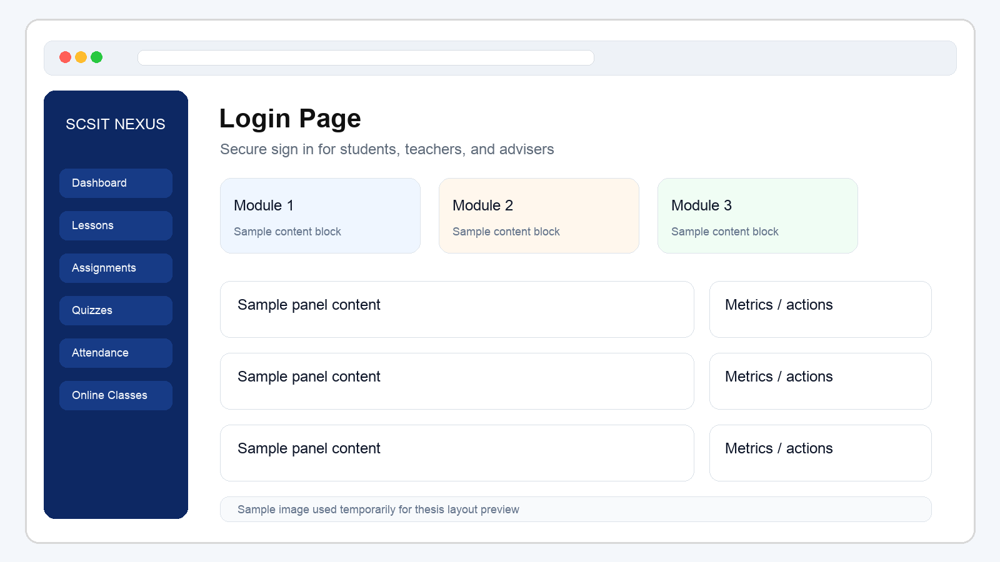
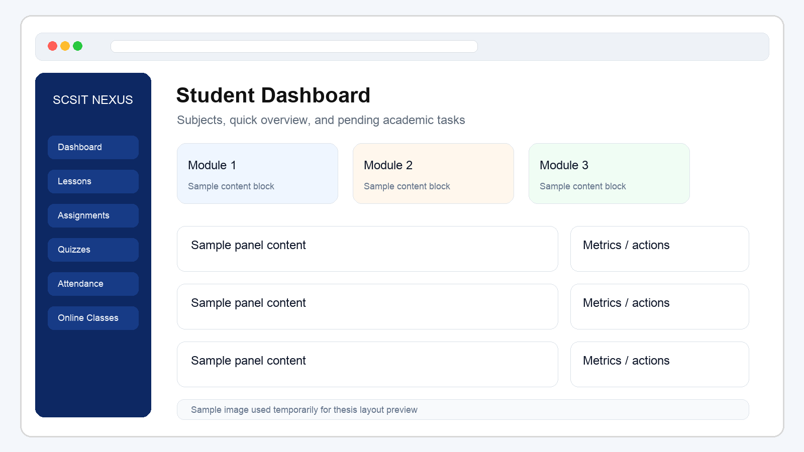
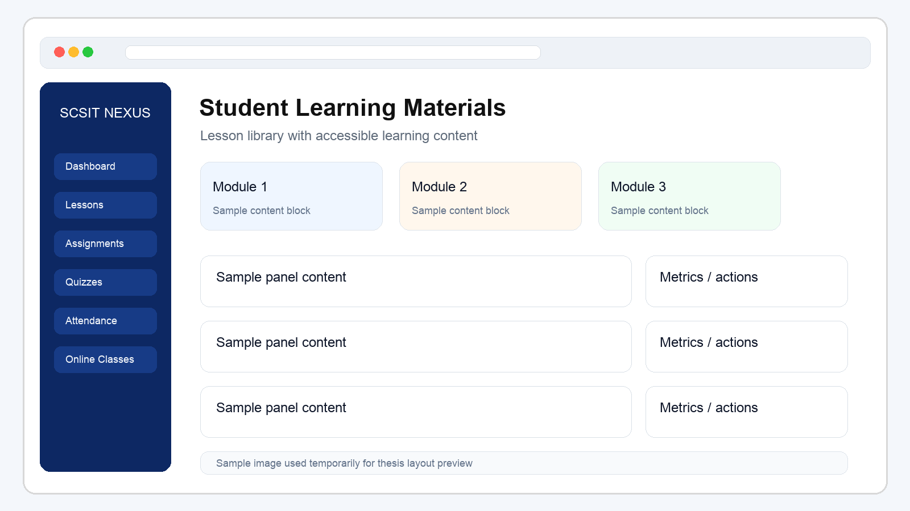
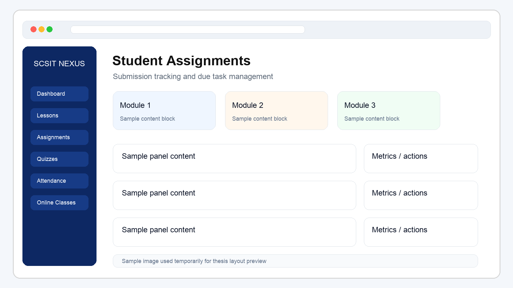
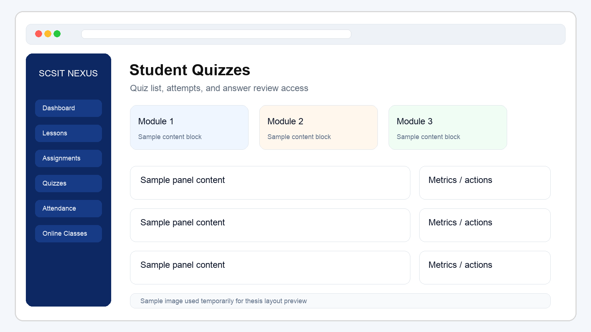
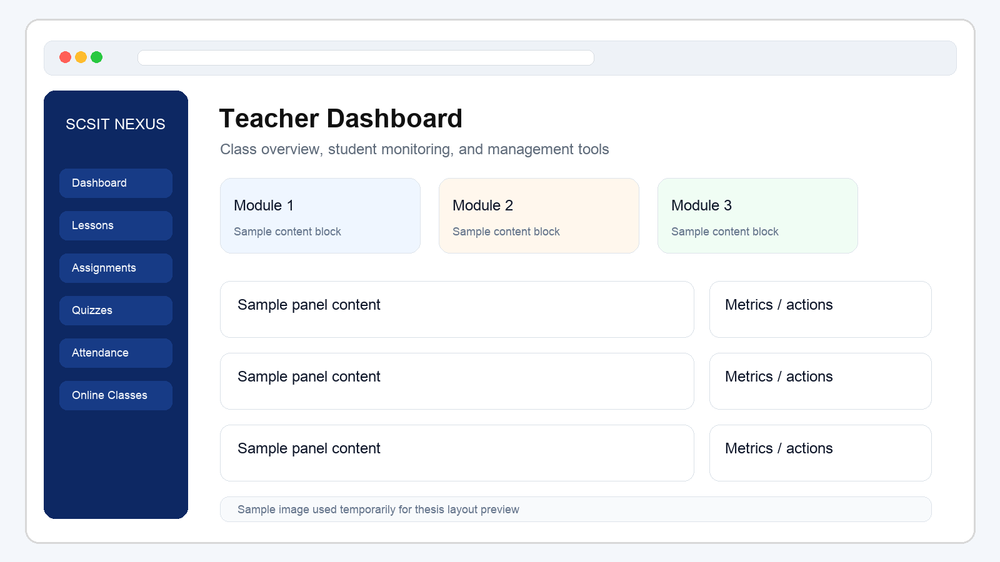

Republic of the Philippines
Salazar Colleges of Science and Institute of Technology
College of Computer Studies
SCSIT NEXUS Web Application
A Thesis Book Focused on the Web-Based Learning Management System for Salazar Colleges of Science and Institute of Technology, with emphasis on Junior High School and Senior High School
A Project Documentation Presented to the Faculty of
College of Computer Studies
Salazar Colleges of Science and Institute of Technology
In Partial Fulfillment of the Requirements for the Degree of
Bachelor of Science and Institute of Technology
Prepared by:
Elton Dagodog
Adviser:
Ms. Jehan Grade c. Durban
April 2026
Approval Sheet
This thesis book entitled SCSIT NEXUS Web Application has been examined and is hereby recommended for approval and acceptance.
| Ms. Jehan Grade c. Durban Thesis Adviser |
Date: ____________________ |
| Era may l. abelgas Panelist |
Date: ____________________ |
| Junel Idaño Panelist |
Date: ____________________ |
| Jehan Grace Durban Dean |
Date: ____________________ |
Approved in partial fulfillment of the requirements for the degree of Bachelor of Science and Institute of Technology.
Project Approval Sheet
This certifies that the project documentation and related system output for SCSIT NEXUS Web Application have been reviewed and accepted as meeting the project requirements of the institution.
| Jehan Grace Durban | Date: ____________________ |
| Jehan Grace Durban Dean |
Date: ____________________ |
| Ms. Jehan Grade c. Durban Adviser / Course Instructor |
Date: ____________________ |
Table of Contents
- Title Page1
- Approval Sheet2
- Project Approval Sheet3
- Table of Contents4
- Abstract5
- Acknowledgement6
- Introduction7
- Overview7
- Institutional Context7
- Target Users8
- Goals and Objectives8
- Main Goal8
- Specific Objective8
- Significance of the Study9
- Methodology9
- Planning Phase9
- Design Phase9
- Development Phase10
- Testing and Documentation Phase10
- Scope & Limitation10
- Scope10
- Limitation10
- Project Management11
- Hardware Resources11
- Software Resources11
- Work Breakdown Structure12
- Project Deliverables12
- System Analysis & Design13
- Theories13
- Analysis and Design14
- Existing Process14
- Proposed Process14
- User Roles and Access Structure15
- Student Operational Flow15
- Teacher Operational Flow16
- Frontend and Backend Technologies16
- Security and Authentication Design16
- Gantt Chart14
- Flowchart15
- User Guide16
- Screen Presentation Guide17
- Conclusion and Recommendation17
- References18
- Appendices19
Abstract
SCSIT NEXUS Web Application is a browser-based learning management system designed to provide a centralized digital environment for academic activities. The system focuses on organizing learning materials, assignments, quizzes, attendance, online classes, records, and communication tools in a single platform that can be accessed through a web browser. The web application is intended for Salazar Colleges of Science and Institute of Technology and is focused on the needs of Junior High School and Senior High School learners and teachers.
The web application supports role-based access for students, teachers, and advisers. Students are provided with a structured dashboard for lessons, assignments, quizzes, live classes, and records, while teachers are provided with tools for managing classes, content, assessments, and monitoring student performance. Through this structure, the system aims to improve academic organization, simplify classroom processes, and support digital learning within the institution.
This thesis book presents the documentation of the web application only. It covers the project background, objectives, methodology, scope and limitation, project management, system analysis and design, conclusion, recommendation, references, and appendices.
The project also includes backend services that support authentication, data management, attendance-related processing, records handling, file support, notifications, and real-time communication, making the system a complete academic platform rather than a simple static website.
Acknowledgement
The researchers would like to express their sincere gratitude to everyone who contributed to the completion of this project documentation and the development of the SCSIT NEXUS Web Application.
Special thanks are extended to our thesis adviser, faculty members, panelists, classmates, friends, and family for their guidance, encouragement, and support throughout the development and documentation process. We also acknowledge the institution for providing the academic environment and resources necessary to complete this project.
Above all, we thank Almighty God for wisdom, strength, and perseverance in accomplishing this work.
Introduction
This chapter presents the background of the project and the main purpose of developing the SCSIT NEXUS Web Application.
Overview
SCSIT NEXUS is a web-based learning management application intended to improve the way academic tasks are handled in a digital environment. The system brings together public access pages, secure login, role-based dashboards, learning materials, assignments, quizzes, attendance monitoring, online classes, chat, notifications, and records into a single web platform.
Based on the current web implementation, the application is designed for users such as students, teachers, and advisers. Each user is redirected to the proper dashboard after login, allowing access only to the modules relevant to their responsibilities. The public web pages also explicitly position the system as a platform for Salazar Colleges of Science and Institute of Technology, focused on Junior High School and Senior High School operations.
Institutional Context
The system is designed for Salazar Colleges of Science and Institute of Technology and reflects the academic environment of Junior High School and Senior High School programs. In this setting, students need a reliable platform for classroom learning, while teachers and advisers need a digital tool for monitoring academic tasks, attendance, submissions, and overall student participation.
Target Users
The major users of the web application are students, teachers, and advisers. Students use the platform to consume lessons and submit academic requirements. Teachers use the platform to manage classes, assessments, and instructional resources. Advisers use the platform to oversee assigned sections and monitor student records and learning progress.
Problem Statement
Academic information is often distributed across several disconnected methods such as classroom announcements, chat messages, printed notes, and separate file-sharing tools. This can result in lost instructions, unclear deadlines, weak monitoring of submissions, and difficulty in maintaining a centralized academic record. The SCSIT NEXUS web application addresses this problem by providing one organized system for access, learning, submission, and monitoring.
Goals and Objectives
Main Goal
The main goal of the project is to develop a clean, organized, and accessible web application that centralizes academic processes and supports teaching and learning activities in one browser-based platform.
Specific Objective
- To provide a secure login system with role-based redirection.
- To give students access to subjects, lessons, assignments, quizzes, and online classes.
- To provide teachers with tools for class management and academic monitoring.
- To organize attendance, records, and communication inside one system.
- To improve usability through a structured and responsive web interface.
Significance of the Study
The study is significant because it presents a centralized digital platform that can reduce the fragmentation of academic processes in school operations. Instead of relying on separate tools for announcements, assignments, quizzes, live sessions, and progress checking, the system unifies these functions in one interface. For students, this improves accessibility and academic awareness. For teachers and advisers, it improves class management, monitoring, and communication efficiency.
Methodology
This chapter explains the general process followed in planning, designing, implementing, and documenting the web application.
The project followed a development process that involved planning, interface design, implementation, testing, and documentation. The web application was structured into feature-based modules so that each major function of the system could be built and maintained more clearly.
Planning Phase
The planning phase involved identifying the academic needs of the intended users, defining the major user roles, and listing the core modules that had to be included in the system. During this phase, the project scope was narrowed to web application features relevant to Junior High School and Senior High School academic processes.
Design Phase
In the design phase, the researchers organized the navigation structure, dashboard hierarchy, and module arrangement of the platform. Screen layouts were planned to keep student tasks and teacher management functions easy to reach. Role-based routing was also considered in this phase to ensure that each user type would see only the appropriate pages and controls.
Development Phase
During development, the researchers identified the required user roles and mapped the needed modules for each one. Screens and workflows were then designed to support tasks such as login, viewing lessons, handling assignments, managing quizzes, monitoring attendance, and joining online classes.
Testing and Documentation Phase
The system was implemented as a modern web frontend and was continuously checked based on functional behavior, navigation flow, and consistency of user access. After development, the project was documented in a structured thesis-book format to support presentation, evaluation, and future revision.
Scope & Limitation
Scope
This documentation covers only the web application of SCSIT NEXUS. It includes the public pages, authentication flow, student dashboard modules, teacher dashboard modules, adviser-related access, and the general frontend structure of the system. It is specifically framed around the school context of Salazar Colleges of Science and Institute of Technology for Junior High School and Senior High School use cases.
The documented features include lessons, assignments, quizzes, attendance, online classes, notifications, chat, transcript-related pages, and role-based navigation within the web platform.
Limitation
This thesis book does not cover the mobile application, backend source code in full detail, deployment infrastructure, or server administration procedures. It also does not include final institutional signatures, school-specific charts, or screenshots that may still need to be inserted before submission.
Project Management
Hardware Resources
| Resource | Description |
|---|---|
| Laptop / Desktop Computer | Used for frontend development, testing, documentation, and browser-based validation. |
| Internet Connection | Used for package installation, research, and remote service access when needed. |
| Storage Device | Used for saving the project files, documentation, and backups. |
Software Resources
| Software | Description |
|---|---|
| Next.js | Framework used to build the web application pages and routing. |
| React | Library used for creating reusable user interface components. |
| TypeScript | Used to improve code structure and maintainability. |
| Axios | Used for API communication. |
| React Query | Used for fetching and managing server data. |
| Visual Studio Code | Used as the development environment. |
| Django REST Framework | Used by the backend to expose API endpoints consumed by the web application. |
| Simple JWT | Used for token-based authentication and secure access management. |
| Django Channels and Daphne | Used for real-time features and WebSocket-capable backend services. |
| PostgreSQL Support | Provided through psycopg2-binary for database integration in the Django backend. |
| Redis | Used with channels_redis for message brokering in real-time features. |
| Rust Chat Server | Used as a separate real-time messaging service for chat-related operations. |
| Cloudinary and django-cloudinary-storage | Used to support media and asset storage for uploaded educational content and files. |
| Gunicorn and WhiteNoise | Used in deployment-oriented backend setup for application serving and static file handling. |
Work Breakdown Structure
- Project planning and requirements gathering
- Interface layout and navigation design
- Authentication and role-based access implementation
- Student module development
- Teacher module development
- Testing and refinement
- Documentation and thesis preparation
Project Deliverables
The expected outputs of the project include the web frontend, connected backend services, dashboard interfaces for student and teacher roles, documentation files, sample visual materials, and export-ready thesis documents such as PDF and DOCX.
System Analysis & Design
This chapter discusses the conceptual basis of the system and presents the major design elements of the web application.
Theories
The project is based on the concept of a learning management system, where academic resources and activities are centralized into one digital platform. It also applies role-based access control, allowing each user to interact only with the features necessary for their responsibilities.
It also reflects the principles of a web-based information system, where centralized records, controlled access, and structured workflows contribute to better consistency, accessibility, and operational efficiency.
Analysis and Design
The current web application is organized into public pages and protected dashboard routes. After authentication, users are redirected based on role. Students are given access to academic consumption modules, while teachers and advisers are given management and monitoring tools.
Existing Process
In a typical school setup without a centralized learning management system, information may be spread across verbal instructions, printed materials, social messaging, and disconnected classroom tools. This can create delays, missing requirements, and difficulty in tracking deadlines, attendance, or student performance.
Proposed Process
The proposed process uses a single web application where public information, user authentication, dashboard access, classroom resources, assessments, attendance, communication, and monitoring are connected in one structured platform. This reduces task fragmentation and creates a clearer academic flow for both students and teachers.
User Roles and Access Structure
The application follows role-based access. Student users are redirected to the student dashboard, teacher users are redirected to the teacher dashboard, and adviser users are redirected to the adviser-specific teacher section. This separation improves usability and protects functions that should only be available to authorized users.
Student Operational Flow
- The student opens the web application and accesses the login page.
- The student enters valid credentials and signs in.
- The system validates the account role and redirects the user to the student dashboard.
- The student checks enrolled subjects, pending assignments, quizzes, and available lessons.
- The student opens learning materials, participates in online classes, and submits requirements.
- The student reviews transcript, attendance, notifications, and progress-related records.
- The student logs out after completing the needed tasks.
Teacher Operational Flow
- The teacher opens the web application and signs in using a faculty account.
- The system validates the account role and redirects the teacher to the teacher dashboard.
- The teacher accesses classes, lessons, assignments, quizzes, attendance, and online classes.
- The teacher uploads instructional content, creates tasks, and reviews submissions or quiz attempts.
- The teacher monitors student records, identifies pending work, and manages class-related actions.
- The teacher or adviser logs out after completing administrative and instructional tasks.
Frontend and Backend Technologies
The project uses a multi-layered architecture composed of a web frontend, a Django-based backend, and a separate real-time chat service. The web frontend is built with Next.js, React, TypeScript, Axios, and React Query. The main backend uses Django 6, Django REST Framework, and Simple JWT for authentication and API handling. Real-time support is enabled through Django Channels, Daphne, Redis, and a dedicated Rust-based chat server implemented with Actix Web, Actix actors, Tokio, and Reqwest.
This combined structure allows the SCSIT NEXUS platform to support secure browser access, role-based academic workflows, API-driven data exchange, notifications, and chat-related functionality for Junior High School and Senior High School users of Salazar Colleges of Science and Institute of Technology.
Backend Functional Responsibilities
The backend layer is responsible for user authentication, role validation, lesson and academic data delivery, attendance-related processing, assignment and quiz record handling, notification support, file-related services, and coordination with the separate real-time chat server. This makes the platform a complete working academic system rather than a purely visual frontend.
Security and Authentication Design
The web application uses authenticated access with login validation and role-based redirection. Based on the implemented stack, token-based security is supported through JWT handling in the backend, while the frontend manages access and refresh behavior to maintain user sessions. This design helps protect academic data and ensures that modules are only visible to the proper users.
Gantt Chart
The project development timeline began in February 2026 and was completed on April 23, 2026. The schedule below is arranged by week and reflects your sequence of work, where backend development was started first. Deployment is scheduled from April 18 to April 23, 2026.
| Project Activity | Feb 1-7 |
Feb 8-14 |
Feb 15-21 |
Feb 22-28 |
Mar 1-7 |
Mar 8-14 |
Mar 15-21 |
Mar 22-28 |
Mar 29 Apr 4 |
Apr 5-11 |
Apr 12-17 |
Apr 18-23 |
|---|---|---|---|---|---|---|---|---|---|---|---|---|
| Project planning and requirements gathering | ✓ | ✓ | ||||||||||
| Backend database and API development | ✓ | ✓ | ✓ | ✓ | ✓ | ✓ | ✓ | ✓ | ✓ | |||
| Authentication and role-based access | ✓ | ✓ | ✓ | ✓ | ✓ | |||||||
| Frontend interface and dashboard development | ✓ | ✓ | ✓ | ✓ | ✓ | ✓ | ✓ | |||||
| Student module integration | ✓ | ✓ | ✓ | ✓ | ✓ | |||||||
| Teacher and adviser module integration | ✓ | ✓ | ✓ | ✓ | ✓ | |||||||
| Chat, notifications, and real-time features | ✓ | ✓ | ✓ | ✓ | ✓ | |||||||
| Testing, revisions, and bug fixing | ✓ | ✓ | ✓ | ✓ | ✓ | |||||||
| Documentation and thesis preparation | ✓ | ✓ | ✓ | |||||||||
| Deployment | ✓ |
Flowchart
User Guide
The web app allows the user to access the system through a browser. Public users may first view landing information pages. Registered users may then log in using valid account credentials.
- Open the web application in a browser.
- Navigate to the login page.
- Enter a valid email address and password.
- Wait for the system to verify the user role.
- Access the correct dashboard based on the user account.
- Use the available modules such as lessons, assignments, quizzes, attendance, records, or online classes.
- Log out after completing the required tasks.
Screen Presentation Guide
For thesis presentation purposes, the screenshot sequence may begin with the public landing page, followed by the login interface, then the student dashboard, student learning modules, student online classes, and finally the teacher dashboard. This order presents the system from general access down to role-based academic use.
Student Module Summary
The student side of the system focuses on academic participation. It includes subject access, lesson viewing, assignment checking, quiz participation, attendance-related visibility, online class participation, and review of progress or transcript-related records.
Teacher Module Summary
The teacher side of the system focuses on academic management. It includes class overview, learning material organization, assignment and quiz handling, attendance monitoring, online class supervision, and review of student-related performance information.
Actual Web Page Screenshots






Conclusion and Recommendation
The SCSIT NEXUS Web Application provides a structured digital platform for academic interaction. Its current implementation shows a practical and organized approach to managing learning materials, assessments, online class sessions, attendance, records, and communication inside one web-based environment.
The system is especially aligned with the academic environment of Salazar Colleges of Science and Institute of Technology and with the operational needs of Junior High School and Senior High School users. It is recommended that the final thesis version include actual screenshots, formal institutional names, complete signatories, the official Gantt Chart, the finalized flowchart, and any additional appendix materials required by the school.
References
- Next.js Documentation. Retrieved from https://nextjs.org/docs
- React Documentation. Retrieved from https://react.dev
- TypeScript Documentation. Retrieved from https://www.typescriptlang.org/docs
- TanStack Query Documentation. Retrieved from https://tanstack.com/query
- Axios Documentation. Retrieved from https://axios-http.com
- Django Documentation. Retrieved from https://docs.djangoproject.com
- Django REST Framework Documentation. Retrieved from https://www.django-rest-framework.org
- Simple JWT Documentation. Retrieved from https://django-rest-framework-simplejwt.readthedocs.io
- Django Channels Documentation. Retrieved from https://channels.readthedocs.io
- Redis Documentation. Retrieved from https://redis.io/docs
- Actix Web Documentation. Retrieved from https://actix.rs
- Reqwest Documentation. Retrieved from https://docs.rs/reqwest
Appendices
This section may contain the following supporting materials:
- System screenshots
- Gantt Chart image
- Flowchart image
- Additional user interface samples
- Extra project documents required by the institution